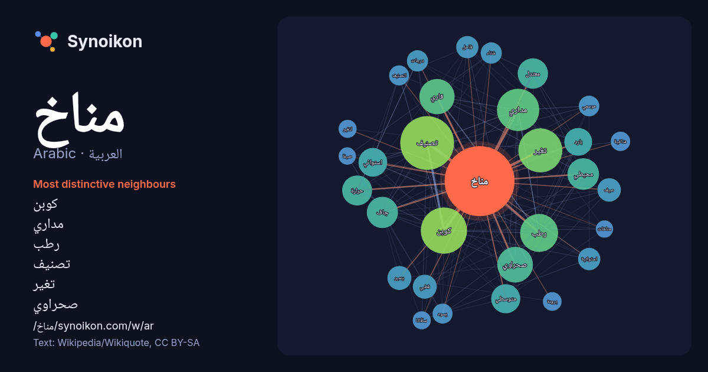

العربية · Arabic · popular word
مناخ
“climate” · The words found around it in 945 instances from Arabic Wikipedia, Wikiquote.

Most distinctive neighbours
- كوبن 86×
- مداري 69×
- رطب 56×
- تصنيف 55×
- تغير 52×
- صحراوي 49×
- قاري 47×
- محيطي 39×
- جاف 36×
- معتدل 35×
- متوسطي 34×
- استوائي 32×
- بارد 28×
- قطبي 23×
- قاحل 21×
- استوائية 18×
- حرارة 17×
- موسمي 17×
- يسود 17×
- لتصنيف 16×
× = how many times more often than in general Arabic Wikipedia text.
Most frequent neighbours
- تصنيف 116
- كوبن 86
- تغير 78
- مداري 72
- منطقة 65
- رطب 58
- صحراوي 51
- قاري 50
- متوسط 43
- محيطي 40
- جاف 39
- مناطق 38
- معتدل 37
- حرارة 36
- متوسطي 34
- استوائي 33
- بحر 33
- بارد 31
- نظام 25
- قطبي 23
In context
- والرياح والهطول المطري. بمعنى أوسع، المناخ هو حالة مكونات النظام المناخي، والتي تشمل المحيطات والجليد على الأرض. يتأثر مناخ موقع ما بالتضاريس والعرض الجغرافي Wikipedia snippets · مناخ
- المناخ الرطب القاري (كوبن: يرمز له بالحرف الأول D والحرف الثالث a أو b) هو منطقة مناخية عرّٙفها عالم المناخ الروسي-الألماني فلاديمير كوبن سنة 1900، وهي Wikipedia snippets · مناخ رطب قاري
- المناخ المتوسطي أو مناخ الصيف الحار هو المناخ السائد في حوض البحر المتوسط. يتم تعريف المناخ المتوسطي بشتاء ممطر مع صيف دافئ إلى حار. رغم أن تسمية المناخ Wikipedia snippets · مناخ متوسطي
- المناخ الصحراوي أو المناخ القاحل هو مناخ لا يعدو أن يكون ضمن المناخ القطبي حيث أن تساقطاته جداً ضعيفة التحمل أي تنبت، عدا بعض النباتات التي تتحمل مثل Wikipedia snippets · مناخ صحراوي
- مَنَاخُ الرُّضَيْمَة أو مَعْرَكَةُ الرُّضَيْمَة هو مناخ حدث عام 1823م/1238 هـ واستمر 3 شهور في الرضيمة شمال شرق الرياض بين ماجد بن عريعر آل حميد حاكم Wikipedia snippets · مناخ الرضيمة
- مناخ الضال او مناخ الدوادمي هو مناخ وقع بين الدولة السعودية الثانية وقبيلة عتيبة عام 1292هـ. مناخ الدوادمي او مناخ الضال، وهي المعركة الأولى للإمام عبد Wikipedia snippets · مناخ الضال
- المناخ المحيطي أو المناخ البحري أو مناخ الساحل الغربي هو حسب تصنيف كوبن للمناخ مناخ شائع بالسواحل الغربية في خطوط العرض المتوسطة للقارات، وعموماً يكون Wikipedia snippets · مناخ محيطي
- مناخ نيجيريا مداري في معظمه. وتضم نيجيريا ثلاث مناطق مناخية متميزة، ويمر بها فصلان، ويتراوح متوسط درجات الحرارة فيها بين 21 درجة مئوية و35 درجة مئوية Wikipedia snippets · مناخ نيجيريا
More Arabic words
- أغنية
- إله
- تاريخ
- جبل
- جرس
- جزيرة
- جسر
- حديقة
- حصان
- حقيقة
- حياة
- خبز
- خريطة
- خريف
- ذهب
- زمن
- ساعة
- شاي
- شتاء
- صحة
- صحراء
- صمت
- صيف
- طبيعة
- طريق
- طعام
- ظل
- عائلة
- عاصفة
- عسل
- علم
- عمل
- غابة
- فن
- قطار
- قطة
- قلب
- قوة
- كلب
- لغة
- ماء
- مال
- مدينة
- مرآة
- مطر
- ملح
- موت
- نجم
- والدة
Precomputed on 2026-10-09 with default settings (±5 words, medium corpus). The interactive map can refresh it with live data.